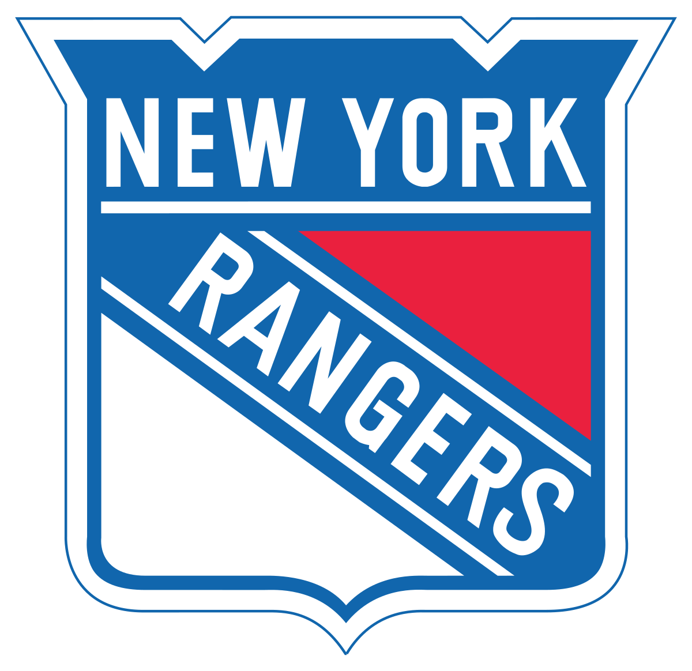
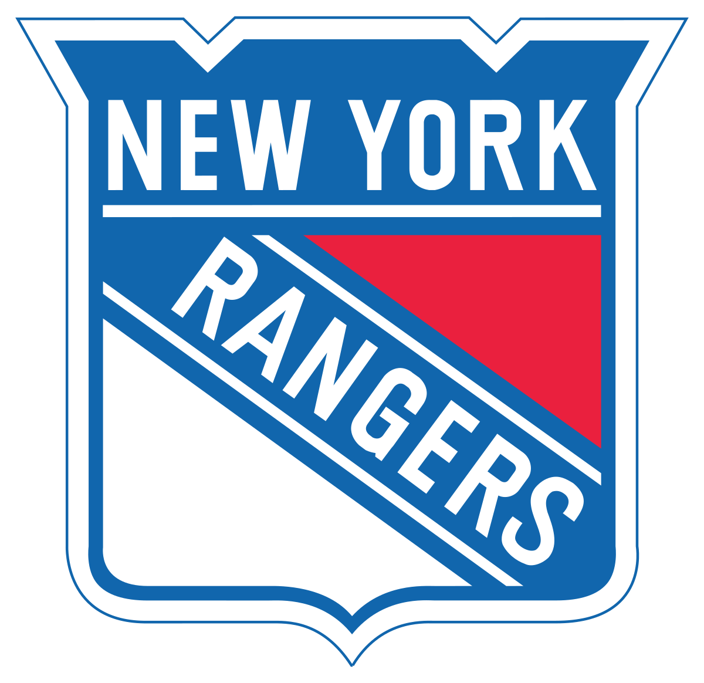

I have various things that take my interest while I am not working of and looking for jobs . These interests can be split up into a few groups; those being Games, Music, and Shows (Divided into 2 groups, Hockey and more Japanese styled shows). These interests, mainly games and shows, are probably my 2 biggest interests outside of the job world.
 
